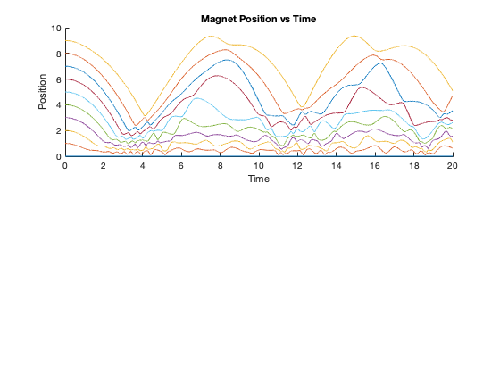
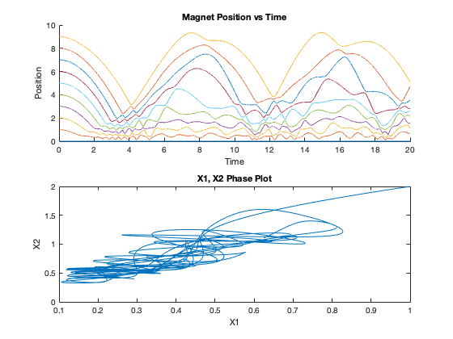

Contents
clear all; clc; close all;
startTime = 0;
stopTime = 20;
T = 0.001;
N = stopTime/T;
t = linspace(startTime,stopTime,stopTime/T);
xArr = [
zeros(1,N);
zeros(1,N);
zeros(1,N);
zeros(1,N);
zeros(1,N);
zeros(1,N);
zeros(1,N);
zeros(1,N);
zeros(1,N);
zeros(1,N);
10*ones(1,N);
];
xArr(2,1) = 1;
xArr(3,1) = 2;
xArr(4,1) = 3;
xArr(5,1) = 4;
xArr(6,1) = 5;
xArr(7,1) = 6;
xArr(8,1) = 7;
xArr(9,1) = 8;
xArr(10,1)= 9;
for k = 2:10
fx = -1 + (1/(xArr(k,1) - xArr(k-1,1))^2) - (1/(xArr(k+1,1) - xArr(k,1))^2);
xArr(k, 2) = xArr(k,1) + (T^2/2)*fx;
end
for j = 3:N
for k = 2:10
f1 = -1 + (1/(xArr(k,j-1) - xArr(k-1,j-1))^2) - (1/(xArr(k+1,j-1) - xArr(k,j-1))^2);
xArr(k, j) = 2*xArr(k,j-1) - xArr(k,j-2) + T^2*f1;
end
end
PART A
figure;
subplot(2,1,1);
hold on;
title('Magnet Position vs Time')
ylabel('Position')
xlabel('Time')
for k = 1:10
plot(t, xArr(k,:))
end
hold off;

PART B
subplot(2,1,2);
plot(xArr(2,:), xArr(3,:))
title('X1, X2 Phase Plot')
ylabel('X2')
xlabel('X1')

PART C
disp('This system is extremely sensitive to its inital conditions, so it must be chaotic')
This system is extremely sensitive to its inital conditions, so it must be chaotic